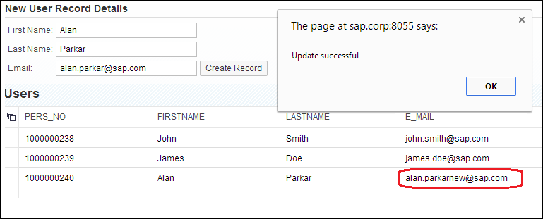

Tutorial: Consume an OData Service with the CREATE Option
An OData service can be used to provide the data required for display in an SAPUI5 application.
Prerequisites
- You have installed the SAPUI5 tools included in the delivery unit (DU) SAPUI5_1.
- You have installed the SHINE delivery unit (DU); this DU contains the tables and OData services that you want to consume with the SAPUI5 application you build in this tutorial.
- You have generated data to populate the tables and views provided by the SHINE delivery unit and used in this tutorial. You can generate the data with tools included in the SHINE delivery unit.
Note You might have to adjust the paths in the code examples provided to suit the
folder/package hierarchy in your SAP HANA repository, for example, to
point to the underlying content (demonstration tables and services) referenced in
the tutorial.
Context
You can bind a UI element in an SAPUI5 application to the data specified in an OData service. For example, you can populate the contents of table columns displayed in an SAPUI5 application with the data stored in a database table defined in an OData service. In this tutorial, you learn how to build an SAPUI5 view that provides input fields, which you can use to create a new record or update an existing record in a database table, for example, using the OData create, update, and delete (CRUD) features.
Procedure
-
Open the SAP HANA Web-based Development Workbench Editor
tool.
The Editor tool is available on the SAP HANA XS Web server at the following URL: http://<WebServerHost>:80<SAPHANAinstance>/sap/hana/ide/editor
-
Create the basic structure for your application:
- Navigate to the package in which you want to create the SAPUI5 application and from the context menu choose Create Application.
- Choose the Empty application (with XSAccess and XSApp) template.
- Enter a package name, for example, userCRUD, and choose Create.
You now have a basic package structure to hold your application files. The root package for your new application also contains the required application descriptors, which control access to the services and data exposed by the new application. -
Create a subpackage to store the SAPUI5 view and controller files:
- Select the userCRUD package and from the context menu choose New Package.
- Enter a name, for example, usercrud, and choose Create.
-
Create the SAPUI5 userCRUD view
(view.js):
- Select the usercrud package and from the context menu choose New File.
- Enter a name, for example, userCRUD.view.js, and choose Create.
-
Create the SAPUI5 userCRUD controller
(controller.js):
- Select the usercrud package and from the context menu choose New File.
- Enter a name, for example, userCRUD.controller.js, and choose Create.
-
Call the view from the index.html file.
Replace the entire content of the index.html file with the following:You have added the following elements to the index.html file:
<!DOCTYPE HTML> <html> <head> <meta http-equiv="X-UA-Compatible" content="IE=edge"> <script src="/sap/ui5/1/resources/sap-ui-core.js" id="sap-ui-bootstrap" data-sap-ui-libs="sap.ui.commons,sap.ui.table" data-sap-ui-theme="sap_bluecrystal"> </script> <script> sap.ui.localResources("usercrud"); var view = sap.ui.view({ id: "iduserCRUD", viewName: "usercrud.userCRUD", type: sap.ui.core.mvc.ViewType.JS }); view.placeAt("content"); </script> </head> <body class="sapUiBody" role="application"> <div id="content"></div> </body> </html>- Bootstrap script: SAPUI5 is implemented in JavaScript, so to load the
SAPUI5 runtime library sapui-core.js from the SAP
HANA repository folder /sap/ui5/1/resources/ on the
client you include its bootstrap with a <script>
tag. The data-sap-ui-theme attribute specifies the
visual design to be applied and the data-sap-ui-libs
attribute the UI control libraries to be used.Note You need to declare any libraries you want the SAPUI5 application to use to render the data it consumes. For this tutorial, you add sap.ui.table to the list of SAPUI5 libraries.
- Application script: SAPUI5 is based on the model-view-controller paradigm. To create the view and controller, the SAPUI5 runtime needs to know from where to load the related resources (sap.ui.localResources); in this case from the relative sub-folder /usercrud. In this example, you place the newly created instance of the userCRUD view from the helloworldx sub-folder in an HTML element with the ID content. SAPUI5 supports different view types; here the JS (JavaScript) view type is used.
- HTML body: The HTML element with the ID content, in which you placed the view, needs to be included in the HTML page. To do this, you add a <div> block with id="content" to the HTML body. The <body> attribute class="sapUiBody" defines the SAPUI5 CSS class to be used, which ensures that the page background and some other styles are properly set. The attribute role="application" sets the WAI-ARIA landmark role.
- Bootstrap script: SAPUI5 is implemented in JavaScript, so to load the
SAPUI5 runtime library sapui-core.js from the SAP
HANA repository folder /sap/ui5/1/resources/ on the
client you include its bootstrap with a <script>
tag. The data-sap-ui-theme attribute specifies the
visual design to be applied and the data-sap-ui-libs
attribute the UI control libraries to be used.
-
Set up the SAPUI5 user interface and bind it to an OData service.
The code you need to add to the userCRUD.view.js performs the following actions:
- Adds three text-entry boxes (sap.ui.commons.TextField) to the SAPUI5 application interface (First Name, Last Name, and Email)
- Adds a Create Record button (sap.ui.commons.Button) to the SAPUI5 application interface
- Binds the SAPUI5 view to the OData service user.xsodata
sap.ui.jsview("usercrud.userCRUD", { getControllerName : function() { return "usercrud.userCRUD"; }, createContent : function(oController) { var oLayout = new sap.ui.commons.layout.MatrixLayout(); this.oModel = new sap.ui.model.odata.ODataModel("/sap/hana/democontent/epm/services/user.xsodata/", true); var updatePanel = new sap.ui.commons.Panel("updPanel").setText('New User Record Details'); var layoutNew = new sap.ui.commons.layout.MatrixLayout({width:"auto"}); var oVal1 = new sap.ui.commons.TextField("fName",{tooltip: "First Name", width: "200px", editable:true}); var oVal2 = new sap.ui.commons.TextField("lName",{tooltip: "Last Name", width: "200px", editable:true}); var oVal3 = new sap.ui.commons.TextField("email",{tooltip: "Email", width: "200px", editable:true}); var oExcButton = new sap.ui.commons.Button({ text : "Create Record", press : oController.callUserService }); layoutNew.createRow(new sap.ui.commons.Label({text: "First Name: "}), oVal1 ); //oExcButton ); layoutNew.createRow(new sap.ui.commons.Label({text: "Last Name: "}), oVal2 ); //oExcButton ); layoutNew.createRow(new sap.ui.commons.Label({text: "Email: "}), oVal3, oExcButton ); updatePanel.addContent(layoutNew); oLayout.createRow(updatePanel); oTable = new sap.ui.table.Table("userTbl",{tableId: "tableID", visibleRowCount: 10}); oTable.setTitle("Users"); //Table Column Definitions var oMeta = this.oModel.getServiceMetadata(); var oControl; for ( var i = 0; i < oMeta.dataServices.schema[0].entityType[0].property.length; i++) { var property = oMeta.dataServices.schema[0].entityType[0].property[i]; oControl = new sap.ui.commons.TextField({change: oController.updateService } ).bindProperty("value",property.name); if(property.name === 'PERS_NO'){ oControl.setEditable(false); } oTable.addColumn(new sap.ui.table.Column({label:new sap.ui.commons.Label({text: property.name}), template: oControl, sortProperty: property.name, filterProperty: property.name, filterOperator: sap.ui.model.FilterOperator.EQ, flexible: true, width: "125px" })); } oTable.setModel(this.oModel); oTable.bindRows("/Users"); oTable.setTitle("Users" ); oTable.setEditable(true); oLayout.createRow(oTable); return oLayout; } });The userCRUD.view.js file should display the UI view shown in the following example: -
Set up the UI elements that the SAPUI5 application uses to handle create and
update events.
The functions that handle the create and update events are defined in the SAPUI5 controller.js file.
-
Add a declaration for the oModel and set it to
null.
This code ensures that the model instance is passed from the SAPUI5 view to the SAPUI5 controller.
sap.ui.controller("usercrud.userCRUD", { oModel : null, -
Set up the callUserService function to handle create events (create new
records in a table).
The code required for this implementation of the callUserService function is shown in the following example:
callUserService : function() { var oModel = sap.ui.getCore().byId("userTbl").getModel(); var oEntry = {}; oEntry.PERS_NO = "0000000000"; oEntry.FIRSTNAME = sap.ui.getCore().byId("fName").getValue(); oEntry.LASTNAME = sap.ui.getCore().byId("lName").getValue(); oEntry.E_MAIL = sap.ui.getCore().byId("email").getValue(); oModel.setHeaders({"content-type" : "application/json;charset=utf-8"}); oModel.create('/Users', oEntry, null, function() { alert("Create successful"); }, function() { alert("Create failed"); }); },In this example, the callUserService function performs the following actions:- Provides access to the model object by means of the controller with a call to var oModel = sap.ui.getCore().byId("userTbl").getModel();.
- Creates a JSON object with the service fields: PERS_NO, FIRSTNAME, LASTNAME, and E_MAIL. PERS_NO can have a fixed value 0000000000. The other fields should be read from the screen with sap.ui.getCore().byId("<insert field id>").getValue();
- Sets a custom header of “content-type” with the value “application/json;charset=utf-8” in the model. This enables a call to the oModel.create function for the entity /Users.
-
Set up the updateService function to handle update events (update
records in a table).
The code required for this implementation of the updateService function is shown in the following example:
updateService: function(Event) { var oModel = sap.ui.getCore().byId("userTbl").getModel(); var index = Event.getSource().oParent.getIndex(); var oEntry = {}; oEntry.PERS_NO = sap.ui.getCore().byId("__field0-col0-row"+index).getValue(); switch (Event.mParameters.id){ case "__field1-col1-row"+index: oEntry.FIRSTNAME = Event.mParameters.newValue; break; case "__field2-col2-row"+index: oEntry.LASTNAME = Event.mParameters.newValue; break; case "__field3-col3-row"+index: oEntry.E_MAIL = Event.mParameters.newValue; break; } var oParams = {}; oParams.fnSuccess = function(){ alert("Update successful");}; oParams.fnError = function(){alert("Update failed");}; oParams.bMerge = true; oModel.setHeaders({"content-type" : "application/json;charset=utf-8"}); oModel.update("/Users('"+oEntry.PERS_NO+"')", oEntry, oParams); } });The updateService performs the following actions:- Accesses the model to read the index of the table for the changed record using Event.getSource().oParent.getIndex().
- Creates a JSON object with the service fields PERS_NO and whichever field was modified or updated. You can access the fields in the table using the event parameter ID “__field<index>-col<index>-row”+index, where index is the table index you read earlier, for example, __field1-col1-row"+index.
- Sets a custom header of “content-type” with the value “application/json;charset=utf-8” in the model. Then you can call the oModel.update function for the entity /Users.
-
Add a declaration for the oModel and set it to
null.
- Save all files.
-
Test your “userCRUD” SAPUI5 application in a Web browser.
-
Select the index.html file and choose
 (Run) in the toolbar.
(Run) in the toolbar.
-
Create a new record in the table referenced in the OData service.
-
Update an existing record in the table referenced in the OData
service.

-
Select the index.html file and choose